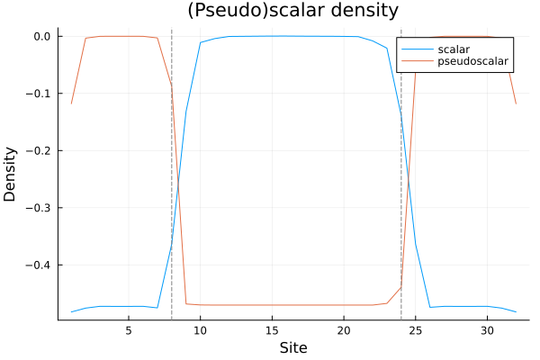

Defects
A DefectCharge is a static (external) charge inserted into the lattice. It enters only through Gauss's law: a charge q placed on the left of link n shifts the electric flux on every link ≥ n by +q. A pair of opposite charges therefore sources a flux string between them, against which the dynamical matter rearranges.
Defects are passed to Hamiltonian with the defects keyword and work with every backend:
- ED / ITensors realise them as a
θ2πstep (no extra site); - MPSKit inserts a genuine extra lattice site carrying the charge, inert under the matter Hamiltonian but contributing to the gauge accumulation. The inserted site is invisible to
Schwinger.jlobservables. (This is overkill for an abelian theory, but it generalizes straightforwardly to non-abelian charges.)
Example: static charges on a 32-site lattice
Here we place charges ±1 at sites 8 and 24 of a 32-site lattice with q = 4 and m = 0, compute the ground state with the ITensors backend, and plot the scalar and pseudoscalar densities. The chiral condensate rearranges across the charged region (see here).
using Schwinger, Plots
lat = Lattice(32; F = 1, q = 4, m = 0)
defs = [DefectCharge(8, 1), DefectCharge(24, -1)]
gs = groundstate(Hamiltonian(lat; backend = :ITensors, defects = defs))
S = real.(scalardensities(gs))
P = real.(pseudoscalardensities(gs))
p = plot(1:length(S), S, label = "scalar",
xlabel = "Site", ylabel = "Density", title = "(Pseudo)scalar density")
plot!(p, 1:length(P), P, label = "pseudoscalar")
vline!(p, [8, 24], ls = :dash, color = :gray, label = "")
p
Manipulating defects
A state remembers the defects it was built with, and the static charges can be moved or added/removed after the fact. Relocating a charge leaves the matter wavefunction untouched (so occupations are preserved while electricfields shift); inserting or removing one changes the total charge and is the way to begin or end a Wilson line.
Schwinger.DefectCharge — Type
DefectCharge(link, charge)
A static (external) charge of strength charge inserted into the lattice on the left side of link link, i.e. between physical sites link-1 and link.
Its only effect is on Gauss's law: it shifts the electric flux on every link n ≥ link by +charge. Equivalently, it adds charge to θ2π[n] for n ≥ link.
A Hamiltonian may be built with a list of DefectCharges (keyword defects):
- ED / ITensors backends realise them as that θ2π shift (no extra site);
- the MPSKit backend inserts a genuine extra lattice site carrying the charge (a 1-dimensional
U1Space(charge => 1)), inert under the matter Hamiltonian but contributing to the gauge/Gauss-law accumulation. The inserted site (and its zero-width link) are invisible to Schwinger.jl observables.
Schwinger.defects — Function
defects(x)
Return the list of static DefectCharges carried by an operator or state. The operator/state keeps the original (unshifted) lattice and this defect list, uniformly across backends — ED/ITensors encode the defects as a θ2π step in the stored matrix/MPO, MPSKit as an extra (hidden) lattice site.
Schwinger.translate_defect — Function
translate_defect(state, defect::DefectCharge, new_link::Int)Move the static defect (which must be in defects(state)) to link new_link, returning a new state with the static charge relocated. The matter wavefunction is unchanged — only the charge's position moves — so occupations are preserved while electricfields shift. For ED/ITensors this merely updates the defect list (the coefficients/MPS are untouched); for MPSKit the extra defect site is physically moved within the MPS by an exact fuse/split, so the result is again a valid MPS.
The returned state keeps the original hamiltonian; build Hamiltonian(lattice(state); defects = defects(state)) if you need the matching Hamiltonian for energy/evolution at the new charge location.
Schwinger.insert_defect — Function
insert_defect(state, link, charge)Insert a static DefectCharge(link, charge) into state, returning a new state. This is the way to begin/end a Wilson line and is non-gauge-invariant: the total charge changes by charge. ED/ITensors merely add the defect to the list (the coefficients/MPS are untouched); MPSKit inserts the extra 1-D defect site at link and bumps the virtual spaces of all tensors to its right.
Schwinger.remove_defect — Function
remove_defect(state, defect::DefectCharge)Remove defect (which must be present) from state; inverse of insert_defect.